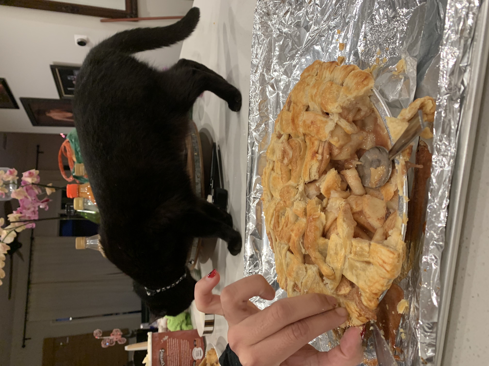

Apple Pie


Description
A perfectly yummy apple pie I baked with my friend Everly during the holidays! Prepared and baked under the careful supervision of their cat Everest. The taste is medium sweet with heavy emphasis on nutmeg and cinnamon spices. Vanilla ice cream topping is optional but highly recommended.
"I think I just came in my mouth" - Everly (after taking their first bite)
Ingredients
- 2 pie crusts
- 10 cups of 1/4 inch sliced apples (about 8 large peeled apples)
- 1/2 cup granulated sugar
- 1/4 cup all purpose flour
- 1 tablespoon lemon juice
- 1/4 teaspoon ground allspice
- 1/4 teaspoon ground nutmeg
- eggwash: 1 beaten egg with 1 tablespoon milk
- a sprinkle of coarse sugar
Steps
- Peel and slice apples
- In a mixing bowl combine apple slices with granulated sugar, flour, allspice, nutmeg, and lemon juice. Mix thouroughly.
- Transfer apple filling to a pan and heat for 5 minutes to soften the apples
- Preheat oven to 400F
- Prepare bottom pie crust on pie dish
- Add filling to pie dish
- Prepare top crust and lattice and crimp edges
- OPTIONAL: use extra dough to make the pie a little coquette bow
- Coat topcrust with eggwash and sprinkle with coarse sugar
- Bake for 25 minutes at 400F
- Add pie crust shield and reduce temperature to 375F and bake for 40 more minutes
- Remove and cool for 1 hour before serving!
Back To Recipies